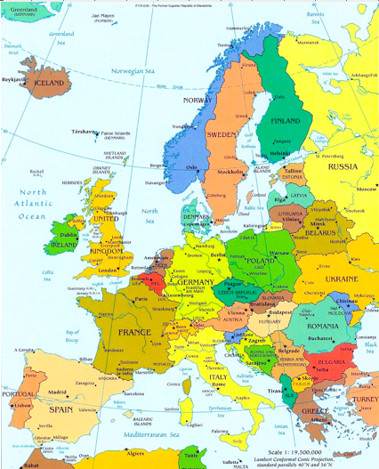
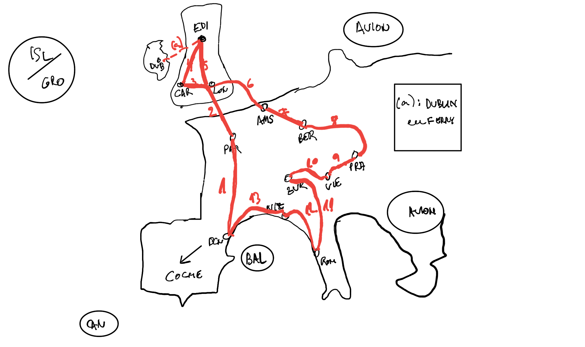

Viajes a Europa

España (Coche/Avión para islas)
España/Portugal: País Vasco, Fachada norte, Andalucía, Algarve, Lisboa
Formigal, Panticosa, Cerler, Astún, Candanchú
Baqueira, Boi Taüll
Mallorca, Ibiza, Menorca
Tenerife, Lanzarote, Gran Canaria, Fuerteventura (Club La Santa)
Galáctica Teruel
Paradores
Camino de Santiago
Ruta N-340
Cabo de Gata
Tarifa
_http://www.skyscanner.es/noticias/las-10-mejores-piscinas-naturales-de-espana_
_http://www.skyscanner.es/noticias/los-17-rincones-mas-bonitos-de-las-islas-baleares__
_
_
_
Tarifa
Restaurantes: Surla, Power House, Raizes o La Garrocha
Tomar algo: Punta Paloma o las Dunas
Playa: Los Lances
Lugares de España que se parecen a otros lugares famosos
Lejano Oeste-Desierto de Tabernas
Teatro de Palmira-Teatro de Mérida
Tirol-Picos de Europa
Hawaii-Canarias
Islas Jónicas-Islas Baleares
Chefchaouen-Júzcar
Basílica de Guadalupe-Catedral De Santiago
Copenhague-Villajoyosa
Manarola (Cinque Terre)-Cudillero
Toscana-La Rioja
Cancún-La Manga
Alpes-Pirineos
Santiago de Chile-Madrid
La Plata-Barcelona
Maldivas-Playa de Seiruga (A Coruña)
Riviera Nayarit-Playa de Gulpiyuri
Carcasona-Olite
Acantilados de Irlanda-Acantilados de Galicia
Catedral de Colonia-Catedral de Burgos
Fiordos noruegos-Riaño
Cerezos de Japón-Valle del Jerte
Catedral de San Basilio-Sagrada Familia
Europa occidental (Interrail)
La ruta de Bourne (interrail): Barcelona-París-Amsterdam-Berlin-Praga-Viena-Zurich-Roma
Francia: París, Zona Alpes, Costa Azul, Biarritz
Top Ten Things to Do in Paris, France
Italia: Roma, Zona Alpes, Malta, Toscana
Suiza: Zona Alpes, Ginebra, Zurich
Holanda: Amsterdam
Alemania: Berlín
Rep.Checa: Praga
Austria: Viena
Reino Unido: Cardiff, Glasgow, Dublin, Londres, Edimburgo
London on a Budget: 47 Free and Cheap Things To Do

Italia
Chianti
Terme di Saturnia
Isole d’Elba
F1 Imola
_https://www.visitmodena.it/en/discover-modena/itineraries-and-routes/discovering-the-motor-valley_
Alquiler Ferrari en Maranello
Maserati Factory Tour
Museo Lamborghini - Bolonia _https://www.museolamborghini.com/en/opening-fees/_
Museo Ducati - Bolonia _https://tickets.ducati.com/en/event/ingresso-museo/155561_
Franceschetta 58 Modena
Lago di Garda
Lago di Como
Cerdeña
Sicilia, Corleone, Etna, Agrigento
Capri
Isla de Procida, Positano
Nápoles, Herculano, Pompeya
Roma
Florencia
Pisa
Siena
Milán
Turín
Venecia
Verona
Francia
Córcega
Normandía
Biarritz
París
Castillos del Loira
Le-Puy-en-Velay
Annecy
Carcassone
Mont-Saint-Michel
Europa oriental
Eslovenia, Croacia
Grecia: Atenas, Santorini
Turquía: Estambul
Europa nórdica
Cabo Norte
Dinamarca: Copenhagen
Suecia: Estocolmo
Noruega: Oslo, Bergen, Cabo Norte
Finlandia: Helsinki
Estonia
_https://www.rallytravel.com/?page=tour-escorted&idno=31_
Europa lejana
Islandia: Reykjavik
Groenlandia